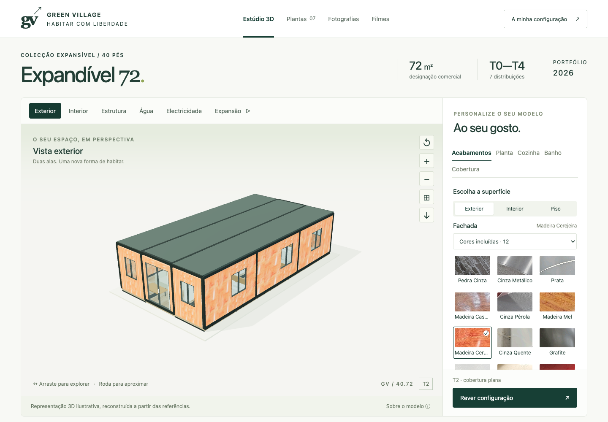
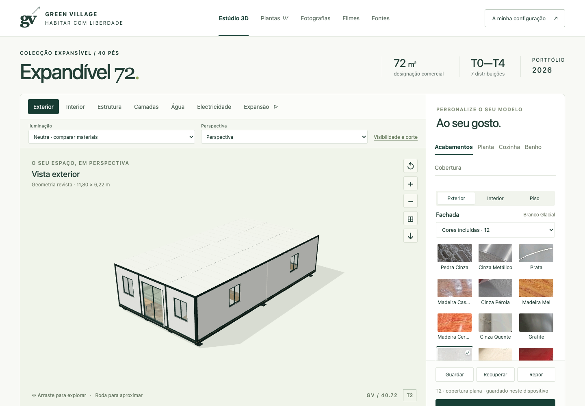
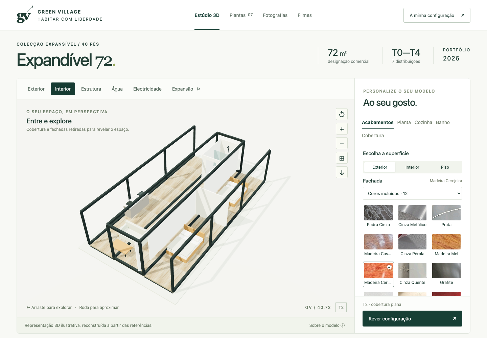
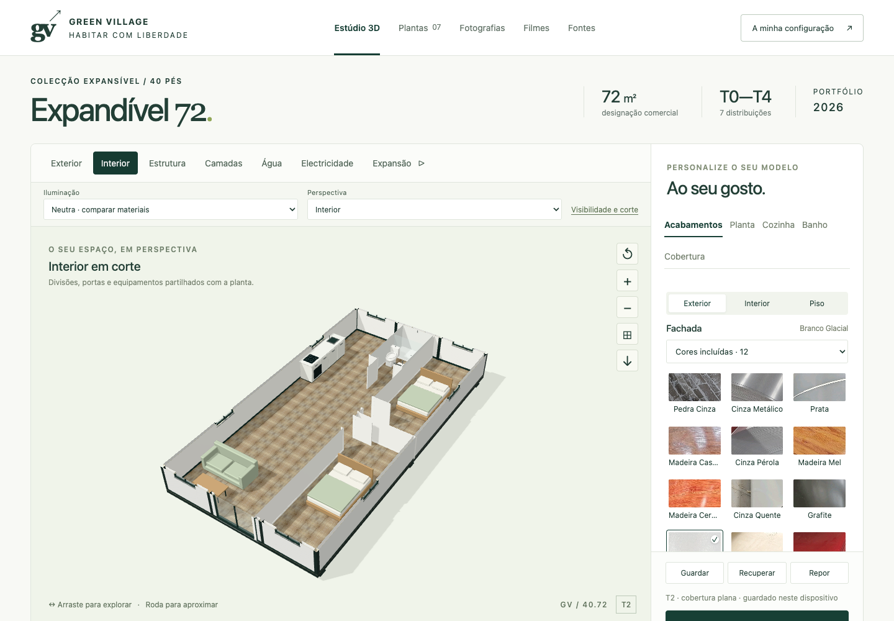
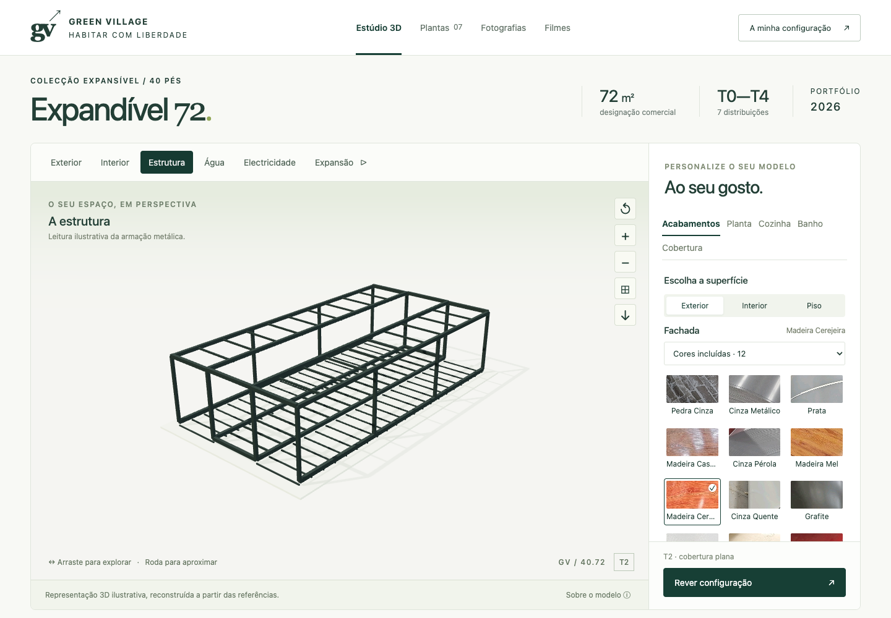
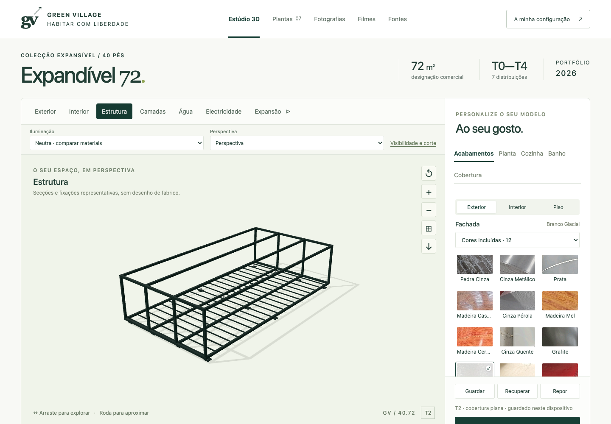
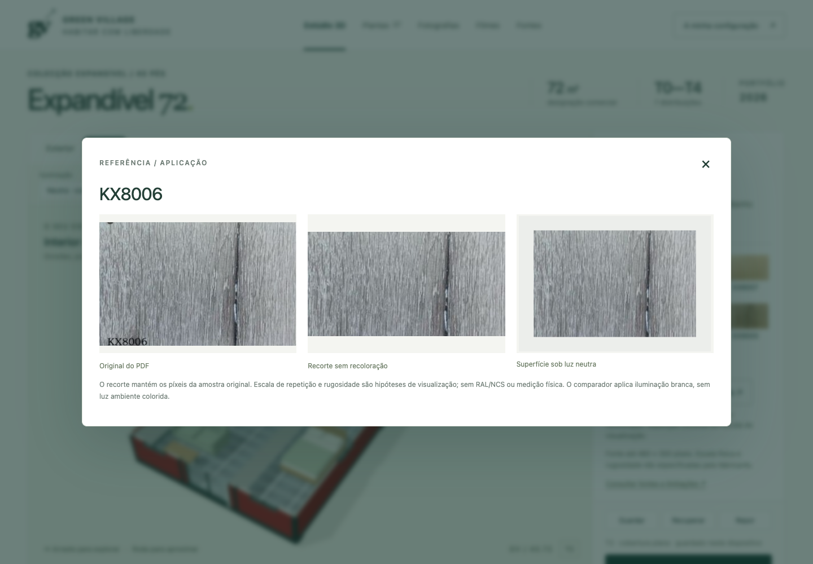

Geometria, materiais e interacções corrigidos no portefólio existente. Esta entrega distingue as cotas dos documentos, as hipóteses da maquete e os pontos que continuam a depender de informação do fabricante.
Capturas reais do navegador a 1440 × 1000. Câmara, alvo, campo de visão e configuração T2 alinhados entre versões. A interface ganhou controlos, pelo que a área disponível para a cena mudou. A versão inicial está preservada no ponto de recuperação recovery/gv72-before-audit-20260910.






| Problema | Causa encontrada | Correcção implementada | Verificação |
|---|---|---|---|
| Bandas e áreas incoerentes | Alas de 2000 mm e núcleo de 2220 mm; designação comercial confundível com área. | 2010 + 2200 + 2010 mm. Rectângulo exterior de 73,396 m²; 72 m² comerciais. Área interior por união das divisórias, descontando vãos e intersecções. | Cotas extraídas independentemente das sete plantas; limites medidos das malhas e testes numéricos. |
| Planta e 3D divergentes | Coordenadas e regras dispersas; portas frontais junto ao extremo errado; janelas traseiras ausentes. | Uma fonte comum para divisões, vãos, equipamentos, planta SVG, áreas e configuração exportada. Portas e contagens de janelas corrigidas. | Sete tipologias confrontadas com fixtures das fontes; mudanças reais no navegador. |
| Texturas esticadas e cores alteradas | Repetição reiniciada por peça, tonalização adicional e médias de fotografias inteiras. | UVs contínuos em metros; cor branca sobre mapas sRGB; recortes sem texto; 8 referências fotográficas aplicadas como cor aproximada. Referências de cozinha deixaram de alterar a cor dos armários por média da imagem. | 71 IDs, originais e recortes conservados. 71 aplicações sem falhas de carregamento. Comparador neutro e mapa cromático disponíveis. |
| Cintilação e peças suspensas | Travessas duplicadas, superfícies coplanares e corte aplicado apenas a alguns materiais. | Travessas redundantes retiradas; camadas recuadas 4 mm dentro do perímetro para a maquete; corte inclui armários, ferragens e cerâmicas. | Capturas aproximadas com e sem sombras e inspecção dos filmes finais. |
| Interferências de mobiliário | Ilhas junto à casa de banho, bancada T4 A sobre a abertura, camas próximas do arco das portas e canto de cozinha em L. | Posições ajustadas; ilha bloqueada nas tipologias incompatíveis; bancada afastada, cama reposicionada e canto cego na cozinha em L. | 48 configurações; arcos de portas amostrados em 31 ângulos e refinamento de seis cozinhas em L com componentes reais. |
| Montagem com colisões | Sequência anterior fazia painéis atravessarem-se e uma parede descer abaixo do piso. | Sequência limitada às etapas sustentadas pelas imagens: pisos/cobertura abertos, paredes a elevar e instalação dos topos. Movimento rígido, sem esticar peças. | 101 posições; zero colisões detectadas entre os conjuntos móveis, piso e cobertura no âmbito amostrado. Folga mínima visual do remate: 3,5 mm; não é tolerância de fabrico. |
| Instalações desligadas do layout | Percursos fixos ou cortados pela vista interior. | Água ligada aos pontos dos equipamentos, passagens ilustradas no piso; electricidade através dos vãos e descidas junto às paredes. Cores por rede. | Sete redes eléctricas e 486 subidas hidráulicas verificadas: passagens alinhadas, sem intersecções detectadas com paredes, pisos ou vigas. Traçados e soluções continuam conceptuais. |
| Escolhas perdidas e controlos incoerentes | Ausência de persistência; reposição sem actualizar caixas e cursores. | Gravação automática, cópia local, recuperação, reposição, JSON validado e sincronização dos controlos. | Recarregamento, ficheiros inválidos, mudanças durante a animação e incompatibilidades verificadas no navegador. |
| Exportações limitadas | Resumo sem ficheiro PDF autónomo e planta sem correspondência integral. | PDF de duas páginas com imagem, escolhas e planta; PNG, SVG e JSON descarregáveis. | Downloads abertos; PDF lido e renderizado em duas páginas. Valores T3 B / Terracota / KX8006 conferidos. |
| Renderização contínua em repouso | Ciclo permanente mesmo sem interacção. | Renderização a pedido, cache limitada de texturas, geometrias estáticas agrupadas e libertação de recursos. | 0 fotogramas em 1,5 s de repouso. Rotação real: 60,03 fps em 3,63 s; cache até 18 texturas, sem crescimento nos ciclos medidos. |

Foram mantidos os 71 originais de 480 × 300 píxeis. Os recortes não foram ampliados nem recolorados. As amostras conservam as limitações de fotografia e impressão do catálogo. Oito referências contêm reflexos ou cenário inadequados para repetição e usam uma cor aproximada extraída da região relevante.
1280 × 720, 24 fps, H.264, sem áudio e com reprodução progressiva. Os 912 fotogramas foram descodificados; início, meio, fim e folhas de contacto foram inspeccionados. O corte interior é anunciado no filme. A montagem não inclui mobiliário ou cobertura adicional: apresenta apenas a envolvente nas etapas conhecidas.
Chromium/Chrome em macOS, Apple M4 através de ANGLE Metal. Vistas de 1440 × 1000 e 390 × 844 com DPR 1. O formato móvel foi testado por emulação de ecrã; não é uma medição em telemóvel físico.
Os registos intermédios incluem 404 dos vídeos enquanto estavam a ser renderizados e um aviso de amostragem do ambiente PMREM. A verificação de integração é separada. O aviso PMREM limita a desfocagem do ambiente; não impede a cena nem altera as texturas originais.